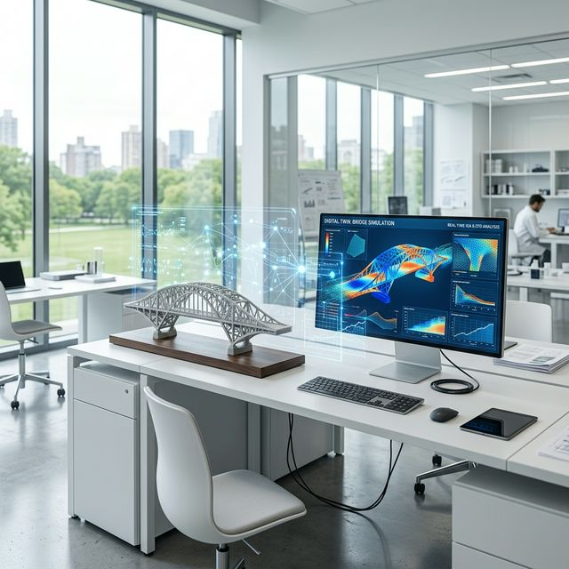

Digital Twin & Reduced Order Modelling
Exploring nonlinear dynamics with Isogeometric Analysis (IGA) and hyper-reduction at LMSSC, Cnam.

Project Architecture
Direct access to the core modules and theoretical documentation.
The Development Hub
Our flagship interactive environment. Experience real-time Isogeometric Analysis (IGA), manipulate NURBS surfaces natively, and explore mathematically hyper-smooth physics prototypes directly in your browser.
The Encyclopedia
A comprehensive, interactive deep-dive glossary explaining core concepts like Knot Insertion, Degree Elevation, and Hyper-reduction.
Read GlossaryProject Tracker
View the internship roadmap, outstanding task items, and architectural timelines mapping our progress to completion.
View TasksData & Repository
Access the core source code, geometry JSON datasets, abstract overviews, and original mathematical reference documentation.
Browse FilesPhase 2: Computational Core
Next: Implementing 2D/3D NURBS geometry, assembling the high-fidelity snapshot matrix, and training our first POD-ROM.